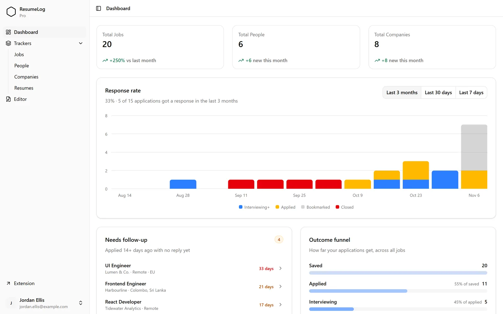
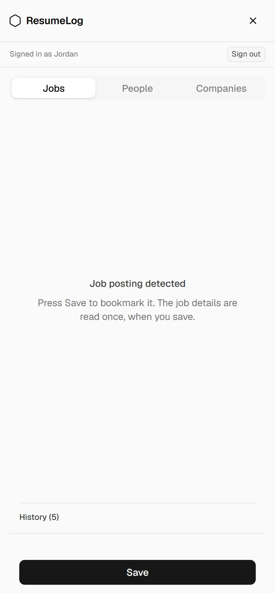
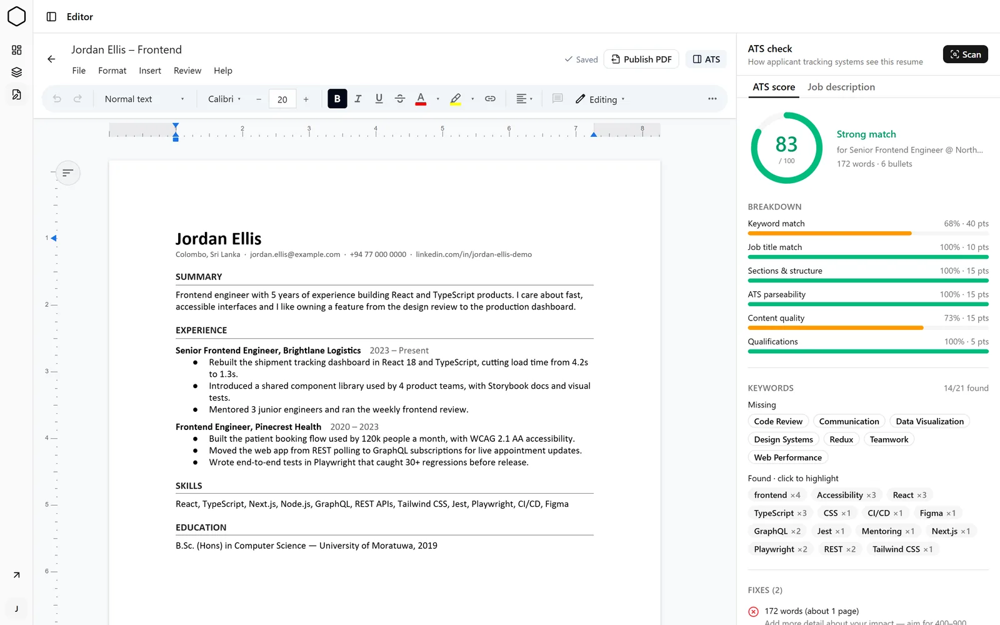

Save jobs, tailor your résumé, and follow up on time.
Your whole job search in one place: a Chrome extension and a dashboard, free to start.


Your whole job search in one place: a Chrome extension and a dashboard, free to start.


